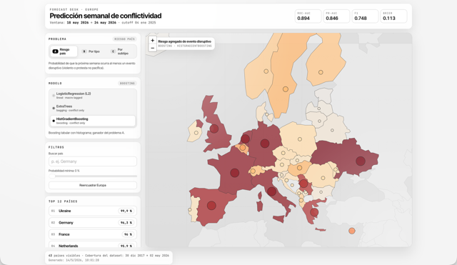
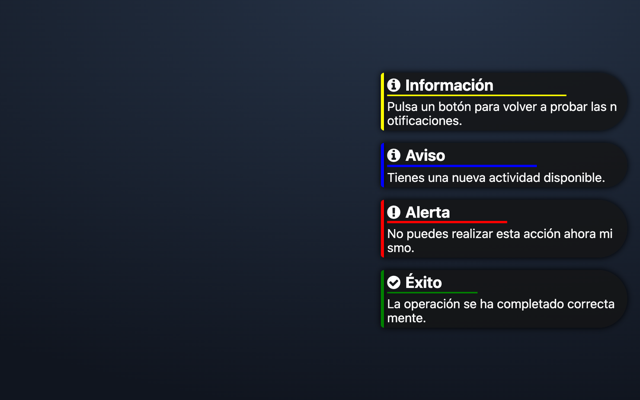
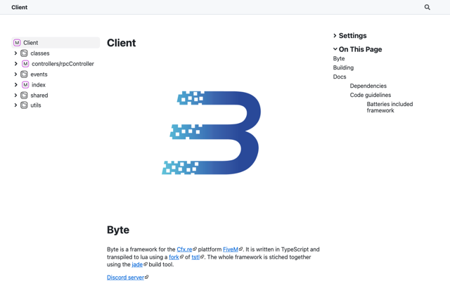

TFG: Predicción temprana de conflictos

Sistema de alerta temprana que estima, con datos de ACLED y Eurostat, el riesgo de violencia política en 45 países europeos para la semana siguiente.
Estudiante del Doble Grado en Matemáticas Aplicadas al Análisis de Datos e Informática, desarrollo web y apps
Estudio el Doble Grado en Matemáticas Aplicadas al Análisis de Datos e Informática en la Universidad Europea de Madrid. Me interesan la programación, el análisis de datos y el desarrollo de aplicaciones. Del desarrollo web me quedo con el front-end: prefiero construir la interfaz a diseñarla desde cero, y me importa que se pueda usar también con el teclado o con un lector de pantalla.
Lo que más me enorgullece es mi TFG: un sistema que estima el riesgo de violencia política en Europa antes de que ocurra, con una semana de margen, y lo muestra en un mapa interactivo. Fuera de clase programo para FiveM, la plataforma de servidores multijugador de GTA V: interfaces en Svelte, scripts en Lua y mi colaboración en Byte, un framework en TypeScript, y en jade, su herramienta de compilación en Rust. También he hecho prácticas como becario en el departamento de IT de Grupo GMP, trabajando para la propia empresa y para sus clientes. Ahora busco prácticas de desarrollo front-end para seguir aprendiendo en proyectos reales.
| Centro | Titulación | Años |
|---|---|---|
| Universidad Europea de Madrid | Doble Grado en Matemáticas Aplicadas al Análisis de Datos e Informática | 2022 – actualidad |
| En curso: en 2026-2027 hago quinto. El TFG del Grado en Matemáticas Aplicadas al Análisis de Datos lo entregué en mayo de 2026. | ||

Sistema de alerta temprana que estima, con datos de ACLED y Eurostat, el riesgo de violencia política en 45 países europeos para la semana siguiente.

Sistema de notificaciones para servidores de FiveM, con la interfaz en Svelte y TypeScript y el script de juego en Lua.
Estado: En curso

Framework para FiveM escrito en TypeScript y transpilado a Lua, que desarrollo junto a su autor, JaRoLoz.